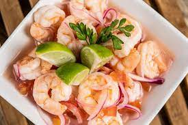
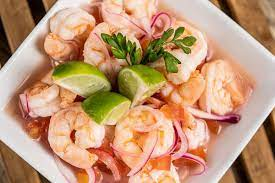

Ceviche
Los ingredientes básicos son el pescado blanco (aunque se puede hacer con marisco o con una mezcla de ambos), la lima, la cebolla roja, el cilantro y la sal. En Centroamérica es habitual acompañarlo de galletas de soda o lechuga.


Los ingredientes básicos son el pescado blanco (aunque se puede hacer con marisco o con una mezcla de ambos), la lima, la cebolla roja, el cilantro y la sal. En Centroamérica es habitual acompañarlo de galletas de soda o lechuga.
